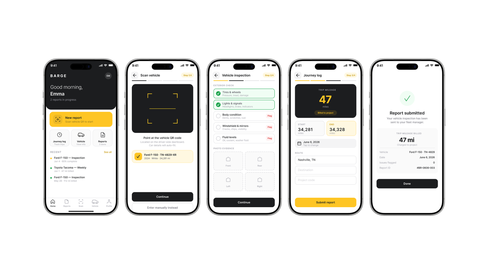
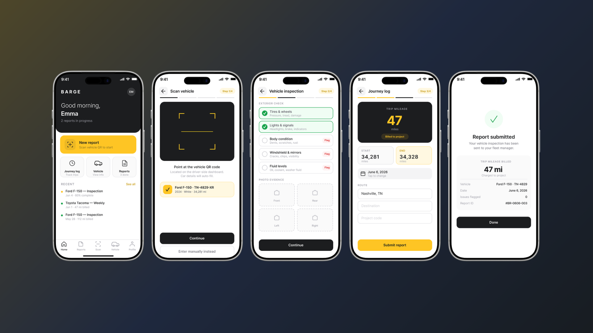

Overview
I saw a broken process at my own company (paper forms, lost mileage reports, frustrated employees) and designed the fix.
As a Project Administrator at Barge Design Solutions, an architecture and engineering firm, I had a front-row seat to how broken the company’s vehicle reporting process was. I interviewed employees and shadowed the existing workflow, and the same three failures kept surfacing, each one a place where paper quietly cost the company time or trust.
Inconsistent mileage tracking. Reporting was manual and error-prone, which led to delays and distrust in reimbursements. Employees wanted to track mileage as they drove rather than reconstructing trips from memory a week later.
No real inspection process. Pre-trip inspections were either skipped or done on paper that got lost. There was no consistent record of vehicle condition, which is a liability gap before it’s a design one.
Manual admin work. Admins relied on paper reports and email chains. Without centralized digital tracking, pulling a report or verifying trip data was tedious and unreliable.

Shadowing the workflow changed what I thought I was designing. The paper form wasn’t the problem; it was a symptom. The thing the company actually ran on was trip mileage, because that number gets billed to a project, and every failure in the process traced back to mileage being captured late, captured wrong, or not captured at all.
That reframed the brief. A digital version of the same form would have been a faithful translation of a broken process. What the design had to do was make the billed number the easiest thing in the app to produce, and make everything around it cheap enough that people would still bother.
from the original file
Version 2. A new safety compliance requirement meant adding vehicle inspections to the flow, and I accommodated it the obvious way: more screens, more steps, a full inspection sequence sitting between the employee and the thing they actually came to do.
It worked and people hated it. Users could complete the process, but testing surfaced real frustration: the app now felt heavier than the paper version it was replacing. Compliance had been satisfied and the product had been made worse, which is the trade I should have caught before building it.
Version 3 stripped it back. QR scanning auto-fills the vehicle so manual entry disappears, the inspection checklist collapses into a single tappable screen with flagging, and trip mileage moves to the front as the hero number. Fewer screens, and micro-interactions that make the flow feel fast rather than bureaucratic.

to export
Version 3 is built around one rule: every interaction either produces the billed number or gets out of its way.
QR code scanning auto-fills the vehicle information, so the employee never types a plate number or an odometer reading from memory. It removes the single largest source of bad data in the old process and it makes starting a report take about two seconds.
Trip mileage is the number billed to projects, so it sits front and center with a Billed to project badge attached. Surfacing it gave employees confidence their travel costs were being attributed correctly, which was as much a trust problem as an accuracy one.
The compliance checklist became a single tappable screen with flag capability rather than a sequence. Same coverage, a fraction of the friction, and flagging a problem is now faster than ignoring it was on paper.
Submission without struggle. Every tester submitted a report unassisted. The digital process was immediately faster and less error-prone than paper.
QR scan equals instant confidence. Auto-filling vehicle details removed the friction point users complained about most, and it changed their posture toward the whole app.
Mileage billing clarity. The hero number plus the Billed to project badge was the detail testers mentioned unprompted. It answered a question the old process left open.
Gauge stayed a prototype. Leadership was excited about it, but internal politics made implementation difficult. That tension taught me something important: solving the design problem is only half the work. Navigating organizational dynamics to get solutions adopted is its own design challenge.
This project also shows something I value. I don’t wait for a brief. I identified a broken process in my own workplace and designed the fix. That instinct, seeing systems that could work better and doing something about it, is what drew me to interaction design.